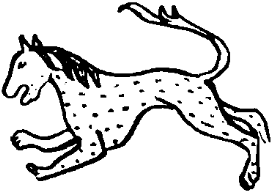

O kışı ve ondan sonraki dört kışı İdil ile Ural’ın arasında, İdil’in kıyısında kavurma yiyerek, kavrulmuş kuyrukyağı giyerek geçirdik. İlk kış, buzu delerek ırmaktan aldığımız balıklar olmasa, belki de açlıktan ölürdük. Koşullar gerçekten güçtü. Sarkel’deyken değerli taş ticareti yapan tüccarların balıkçılığa soyunmaları, İdilli ravların koyun çobanlığı yapmaları gerekti. Ama bir bölünme daha yaşamadık, bir daha birbirimizden ayrılmadık.
Yaşıl Kır doğrusu bu işi iyi kotardı. Olan bir yoksul ite oldu. İdil’i geçip orduyu yeni kurmuştuk. O akşam yine bir yeme içme buyurdum. Yedik, içtik, güzün gidişini, kışın gelişini, yağının kaçışını kutladık. Benim için, kendi Orhon’unu, Hangay’ını yitiren biri için pek sıkıntı değildi, ama Hazar ozanlarının sesinde alışmaları ve birlikte yaşamaları gereken bir üzüntü, bir yas sezdim. Hazar’dan söz ederken artık bir kişi imişcesine “sayın” diyorlar, “ana” diyorlar. Sayın Hazar! Hazar Ana! O sayın’a dönmekten söz ediyorlar. Biraz daha içildi. Ozanın biri acılı acılı sazına vurmaya, vurdukça sazını bir kişi gibi inletmeye, kendi de gözyaşlarını içine akıtarak ağlamaya başladı. Hazar kocaları, Kınık yiğitleri, kazak olup bize sığınmış Urus savaşçıları, taze kızlar, yeni gelinler, güngörmüş nineler başlarını iki yana sallaya sallaya bozlağı dinliyor, Hazar, İdil, Sarkel gibi adlar geçtikçe bazılarının dayanamayıp ağladıkları görülüyordu. Uzun sözlerinin bazı yerleri usuma çakıldı kaldı:
“Ak günümüzün
Buğulu gecesi neredesin?
İdil ile Sarkel’in Görklü ecesi şimdi nicesin?
Hazar, Hazar Sayın Hazar,
Erirken sen dolunay gibi azar azar
Yaralarımızdan kan sızar
Bakar da görmez misin?”
Herkesin iyice çakırkeyif, daha doğrusu çakırhüzün bir anında Yaşıl Kır ayağa fırladı.
“Kağan’ımız ve Maşiah’ımıza yemin çağıdır! Yemin edin! Yemin edin!” diye çığlık çığlığa bağrınıyordu. Ne yemini edilecekti? Nasıl edilecekti? Kimsenin ne bir şey bildiği vardı, ne de sorduğu. Yaşıl Kır boru gibi sesiyle bağırarak başı hoş üzgün yiğitlerin, gözü yaşlı süzgün kızların gözlerinin içine baktı: “Kağanımız için yemin ediyor musunuz?”
Kalabalık bu seste ne buldu bilmiyorum ama tek bir soluk halinde bağırdı:
“Ediyoruz!”
“Ediyor musunuz?”
“Ediyoruz!”
“Aranızda yemin etmeyen, etmeyecek olan varsa bir adım öne çıksın!”
Kimsede tıs yoktu. Yaşıl Kır o zaman en yakınındaki yiğide el etti. Yiğidin kılıcının havada parlamasıyla sönmesi bir oldu: Toy sofrasına sokulmuş, bir iki kemik düşerse diye bekleşip kuyruk sallayan yoksul itlerden biri yerde sırtüstü ve başsız yatıyordu. Yoksulun iki ön patisi sanki susta durmuş gibi öne kıvrılmıştı. Kuyruğu hâlâ sallanıyor, toprağı süpürüyor, ufak bir toz bulutu kaldırıyordu. Diğer köpekler başlarını göğe dikerek acı acı uludular. Ağzımı bile açamamıştım. Hiç beklemediğim bir şeydi. Adamlara kağan olmuştum ama ne zaman ne yapacaklarını kestiremediğim durumlar hâlâ vardı. Yaşıl Kır, bu kez ağır ağır konuştu:
“Aramızda ettiği yemini bozacak varsa kendi kılıcıyla dilinsin, kendi okuyla vurulsun, şu itcegiz gibi olsun mu?”
“Olsun!”
Herkes görsün diye itin başını bir kargıya diktiler, kargıyı da yere sapladılar. Hiçbir şey olmamış gibi yemeye içmeye, ağlamaya sızlamaya, buzlamaya devam ettiler. Yoksul köpeğin başının hemen altında, kargıya çepeçevre bağlanmış bir ak çevre vardı. Toy ilerlerken kızıla durdu. Gözlerim ara ara takıldı kaldı.
Doğudan, kimi zaman da kuzeyden gelen Salur Kazan’ın ordusuyla bu dört yılda tam üç kez vuruştuk. Ne yendik ne yenildik. Salur Kazan’ı o uğraşlarda yakından görmedim. Gök gözlerimi sarı kurt gözlerine dikmedim. Sanki Salur’un bizim orduyu bütünüyle kuşatıp yok etmek gibi bir kaygısı yoktu. Anlaşılan o ki, kendi boylarından daha yoksul ama en az kendi erleri kadar kana susamış göçebe bir ordu ona pek çekici gelmiyordu. Amacının bizim doğuya ve kuzeydoğuya gitmemizi güçleştirmek olduğunu sanıyorum. Belki saldırı sırasının bizde olduğunu, Sarkel’in ve İdil’in öcünü almak için bizim Yengikent’e saldıracağımızı düşünüyor, hemen her yıl karşımıza çıkarak bu sırayı savuşturmuş, bizi uzakta tutmuş oluyordu. Eğer böyle ise, Kazan’ın çabası gereksiz bir çabaydı. Bilemem, belki de boyları arasında karışıklıklar veya sıkıntılar vardı. Bir türlü toparlanıp adam gibi üstümüze gelemiyorlardı.
Her şeye karşın yaşamımız yeniden düzene giriyor gibiydi. İdil’le Ural arasındayken Selcük’le benim üst üste iki kızımız oldu. Büyüğüne Lior Bibi Muncuk, küçüğüne Hulda Eze Yincü dedik. Her geçen yıl sürülerimizin sayısı arttı. Her geçen yıl gelip bize katılanlar oldu. Batıdan Svyatoslav’ın ülkelerinden de tek tük gelenler vardı. Geldi bizim kazağımız oldular. Ama katılanların çoğu doğudan geliyordu. O yüzden tek tek yiğitlere sıkıntı olmasın diyerek ve “Doğu sana gelmeden sen Doğu’ya git” sözü uyarınca, 969 yazının başlarında çadırlarımızı söktük, hayvanlarımıza yükledik, Ural’ı geçtik. Ural ile Emba Suyu arasındaki güzel göğüslü geniş bozkırda konmaya, göçmeye başladık. Buradayken de peş peşe iki oğlumuz oldu. Birine Yusuf, öbürüne Yunus dedik.
Yine bu yurttayken, birkaç yıl sonra, sanırım 972’de, Peçenek hanı Küre Han’ın Urus Koca’yı yendiği, tuttuğu, boynunu it gibi vurdurduğu ve kafatasından kımız çanağı yaptığı sözleri geldi. Biraz bekledim. Gezgin satıcı kılığına girmiş kendi çaşıtlarımdan bu sözün doğru olduğunu öğrendim. Küre Han’a biti bitidim. “Ellerin sıkıntı görmesin yiğit” dedim. “Dayısı gitti. Yeğeni kaldı. Uş burada Salur’a baskı olup dururum ben” dedim. Yukarıda Peçenek varken Kazan’ın büyük bir işe kalkışmayacağını biliyordum. Sürülerini sürdürüp getirdim, gıkı bile çıkmadı. Gün bugün dedim. “Koyunlarınız pek tatlıymış” diye bir yazı gönderdim.
Sonra öğrendik. Salur avdayken ordusunu da basmış, yaşlı anasını kaldırıp götürmüş Peçenek hanı. Katı, güçlü bir yiğide benzerdi. Herkese sarı kurt gözleriyle tepeden bakan Salur Kazan, Karacuk Dağı çobanlarından yardım istemek durumunda kalmış. Öyle çiğ süt emmiş biridir ki, şimdi kendisine yardım eden çobanlara da yağı olur bu Kazan. Kuduz kurdu, kapandan kurtar, kolunu kapsın! Salur’a da “Kişinin anasının gitmesi, babasının gitmesine benzemez! Hiç belli olanla belli olmayan bir olur mu? Geçmiş olsun yiğit!” diye bir biti yazıp gönderdim. Kazan’ın küplere bindiğini dediler. Meğer beylerine eğlence olsun diye benim bitiyi sesli okutmuş! Kazan’ı tut da bağla gibi bir durum olmuş. Ozanların diline düştü. Tam bir koca yıl gezip söylediler. Salur usunu yitirmiş, üzerime gelmek dilermiş! Doğruyu söyledik. Anasının oğlu dedik. Babasının oğluysa karşımıza çıksın! Bunu da yazdım gönderdim. Nasıl oluyorsa, bu yazıların içinde ne varsa anında tüm bozkıra yayılıyordu. “Biraz adımız yürüsün” dedim. Böyle düşündüm. Böyle ettim. Kazan, bu son bitiyi alıp okutunca sinirinden düşmüş bayılmış! Yoksulun kendi okuması yazması yoktu! Yine de bilse ne var içinde, okutmazdı. Ayılınca kafatasımdan içki çanağı yapmazdan önce kanımı içmeye yemin etmiş! Etsin! Gelsin! Gelsin de isterse yılanı kamçı etsin gelsin! Gelsin, onunla görülecek bir işimiz var!
Sonra Salur canını dişine taktı. Oğuz’un, hanlarına “Doymaduk Han” dediği Peçenek’le ölümüne pençeleşti. Peçenek’i bozdu, iki çenek eyledi. Elini vurdu, obasını çaptı. Peçenek’in büyük bölümü batıya kaçtı. Küçük bir bölümüyse Yabgu’ya katıldı. Doğu boylarının bir türlü “p” sesine dönmeyen dilleri yüzünden “Bacanak” ya da “Biçene” adını alarak, Kınık’ın boşalttığı yeri doldurdu. Artık bizim de dirliğimiz biraz bozulacak gibiydi. Bozuldu da. Yengikent yabgusu Salur’la daha kaç yol vuruştuk bu yirmi yılda saymayı unuttum ama her seferinde biz Doğuya, biraz daha doğuya ilerledik.
Yalnız bir kez, epey başlarda bayağıca birbirimize girdik. Birbirimizin gücünü sınadık. Sanırım 973 yılıydı. Geniş bir yazıda, çevresi mor tepelerle çevrili düz bir ovada Oğuz Oğuza, biz bizeydik. Karşımızda korkutacak yabancı olmadığı için ok mok serpmedik, davul mavul çalmadık. Öyle yarım ay, açılan ay, kapanan ay, yalancı kaçış, birden dönüş oyunlarına girmedik. Canından iyice geçen yiğitler atlarının kuyruklarını kesti. Ordunun geri kalanı, “belki yaşar da açarız” diye yalnızca düğümledi. “Maşiah olmazsa el olmaz dedim,” ben de düğümledim. Erler arka arkaya değil, yan yana tek bir sıra oldu. İki ordu karşı karşıya durdu. Karımını seçen seçti. Başından geçen geçti. Tengere Tardu Kağan ben, başımı kaldırdım gömgök göğe baktım. Kan yüklü bulutlar katar olmuş geçiyordu. Hazar’da bir deli sessiz öfke, Kınıklarda biraz burukluk sezdim o gün. Sislice pusluca bir gündü o gün. Yüreğim çok deli çapıyordu. Derin bir soluk aldım. O sisli göğün bir parçasını göğsüme doldurdum.
Kuyruksuz atların acılı kişnemeleri bütün göğü doldurdu. Her iki tarafın çavuşları haykırınca kılıca topuza el sunduk. Deliler gibi at sürerek kendimizi diğerine vurduk. Kılıcın, baltanın ete dokunduğu anda çıkardığı basık sesler savaşın diğer seslerini bastırdı. Kazan’ın delileri “çal kılıcım ağam Kazan, yettim” der. Bizimkilerin arasındaki Hazar yiğitleri “Sarkel, İdil, Sarkel, İdil!” diye bağrışır. Kimileri “Semender, Belencer!” diye çığrışır. Kınıklardan çok arkam geri çekti, çok korktum o gün. Ama karnı burnundaki “kız beyleri”nin, Selcük’ün çevresinden bir an bile ayrılmadan savaştılar. Yüreğinde öç olan yiğitler o gün yüreklerini soğuttu. İçinde hınç olan hatırlar, kargıyı mızrağı bir yana atıp yalnız hınçlarını birbirine batırdı. Hazar, kağan arslan gibi gerindi, sündü. Yiğitler uzun süngüler ile sünüştü. Cağ o çağ, gün o gündü.
Sonra Kazan’ın ulumaları duyuldu. Bütün savaş alanı gür sesiyle ötüyordu. Vuruşma durdu. Kalın Oğuz’un yabgusu Salur Kazan usundan mı olmuştu? Başka ad mı kalmamıştı? Tengere Tardu Kağan’ı nasıl okuyordu? Öne doğru at teptim. Sübaşım Uşun Argamak Ağa yularıma yapışmış beni bırakmıyor. Gitmeyeyim diye yalvarıyordu:
“Kağan! Bir kağanın bir yabguyla dövüştüğü nerede görülmüş! Denk bile değilsiniz.”
Kazan’ın beni yeneceğinden, öleceğimden korkuyordu. Yalvarırken de gerilere bakıyordu. Ben de atımın sırtında geri dönüp baktım. Selcük eliyle, “aman bırakma” diyordu. Bu savaşı kazansak da yitirsek de bozkır ozanlarının “uğraş gününde Tengere Han’ı karısı kurtarmış” diye türkü düzdüklerini duyar gibi oldum. Başımdan aşağı kaynar sular döküldü. Kanım kaynadı. Taştı.
Yine de ben daha bir şey yapamadan, sübaşınım oğlu ve taze yiğitlerden Uşun Atman “Mere Kavat, uş geldim yettim” diyerek alana at tepti. Kazan, gelenin ben olmadığımı görünce, kılıcını kınına soktu. Gelen yiğidin havaya kalkan topuzuna karşı kalkanını kaldırdı, yapındı durdu. Atının üstünde kalkanın arkasına büzüldü kaldı. Toy yiğit topuzunu başının üstüne kaldırmış, kalkana vurmadan Kazan’a nasıl vuracağını kollarken Kazan birden kalkanı yere bıraktı. Boşta kalan sol eliyle Uşun Atman’ı yakasından kavradı, yere çaldı. Atın üstünden yitti biran, yere eğildi kalkanını aldı.
“Mere kavat oğlu kavat, sen Tengere misin? Sen git kağanın gelsin!” diye haykırdı. Bizimkilerden ve onlardan “Kazan! Kazan!” çığlıkları göğe yükseldi.
Durum çok korkuluydu. Savaşlar bozkırda böyle kazanılır, böyle yitirilir. Al etmek gerekti. “Argamak! Alana sen gir!” dedim. Yoksul sübaşım atımın yularını bırakınca yıldırım gibi alana at teptim. Bütün göğüslerden “Tengere! Tengere!” sesleri çıktı.
Kazan’a doğru deli gibi at sürerken aniden belimi büktüm, geri döndüm. Kılıcımın tek vuruşuyla altımdaki aygırı dulladım, düğümlü kuyruğunu düşürdüm. O an orada ben de başımdan geçtim. Bizim ordudan öyle bir uğultu yükseldi ki, Kazan bile biraz afalladı. “Tengere Tardu Kağan ölüme gidecekse bari böyle gitsin” dedim. Bu işi ettim. Kazana ulaştım. Önüme kalkanını tuttu. Ben vurup kestiremeyince, sağ elindeki kılıç ardımdan ulaşıp boynumu alacaktı. Eğri kılıcımın ucuyla bir çalışta, söğüt dalından kalkanı göbeğindeki demire dek biçtim. Yanından dörtnala öteye geçtim. Başımı öne eğdim. Kılıcı ardımdan ulaştı, sırtımda bağlı duran demir kalkana indi. Tuz buz oldu. Elinde bir sapı kaldı. Kazanın ordusuna iyice yaklaşıncaya kadar düz gittim, sonra birden geri döndüm.
Kazan’la yine karşı karşıya durduk. “Mezar uğrusu, o ne vuruş öyle!” dedi Kazan. Kas kas gülüyordu. Kalkanı fırlattı attı. Kazan’ın sol yumruğunda kızıl bir leke vardı. Gittikçe büyüyordu. Topuzunu sağ eline aldı. Kendi ordusundan yana, üstüme at kopardı. Kılıcımı kınına koydum. Ben de topuzuma el sundum. Ben de at teptim. Atlarımız göğüs göğse değil, omuz omuza geldi. İkimiz de aynı anda topuzlarımızı indirdik. Kazan’ın indirdiği topuz benim sol dizimi dağıttı, benim indirdiğim topuz başına gelmesin diye Yabgu iyice sola yattı. Tam o anda, yanından yıldırım gibi geçerken, atımın sağrısı Kazan’ın atına dokundu. Yabgu toparlayamadı. Atından düştü. Ben bu kez bizim orduya doğru at sürüyordum. Birden geriye döndüm. Kazan’ın at uşakları yerdeki Yabgu at ayağı altında kalmasın diye ona doğru koşuyordu. Bizim ordu da bir sel gibi yamacından koptu. Dizimin acısından duramıyordum. Argamak bu kez yularımdan bek tuttu.
İki ordu yine birbirine girdi. Kazan’ın altına yeni bir at çektiler. O da kendi askerinin içine girdi. O gün ata oğuldan, oğul atadan ayrı düştü. O gün Salur’un kargısı kırıldı, oku yasıldı, süngüsü yere düştü. Yer gök yiğitlerin kanı buğusundan kızıla dönüştü. Rengini yerde tutsak bırakan güneş, o gün kapkara battı. Arsılan İsrail o gün mızrağında beş er böğürttü. Babası Tengere, atının boynuna kapandı kaldı. Ben topal kaldım, Kazan çolak oldu. Daha savaşacaktık ki, iki yanın bahşıları Yada taşlarına yapıştı. Yaz günü birden bastıran kar, boran, tipi iki orduyu birbirinden anca ayırdı.
Bir kez burnunu kırmakla ne olur? İt canlı Kazan’la uğraşmanın kazancı var mı? Alp erenler gören var mı Kazan gibi? Kazısan kazısan kazanamazsın ki! Budun içinde Batı’ya gitmek isteyenler çoğaldı. Selcük bile “Maşiah, acaba mı” demeye başladı.
“Yok” dedim, “Yok, bizim daha Doğu’ya gitmemiz gerek! Salur’un da ardına geçmek gerek. İnine girmemiz gerek! O kurdu yatağından etmek gerek! Salur’dan korkmamak gerek. O karşıdakinin korktuğunu anlayınca saldıran kurt gibidir. Üstüne üstüne gitmek, gözlerinin içine bakmak gerek. Hele Oğuz, korktuğumuzu hiç düşünmesin!”
Böyle düşündüm. Göç buyurdum. Göç oldu. Daha yıllarca bozkırda dolaştık. Mikail adında bir tekne kazıntımız oldu. Üçüncü kızım, Raşel’im bile büyüdü. Koca kız oldu. Sonra bir gün kalktık, Yengikent’e hiç bulaşmadık, ötesinden geçtik. Oğlumuzla uşağımızla, atımız arabamızla 985 yılı yazının başlarında Seyhun ya da Sir Derya denen ulu suyun üstünde tüccarı bol, zengin bir kent olan Cend’e gittik. Aşağısı, dilleri dilimize benzemez, itleri itlerimize benzemez Tat ve Tacik elleriydi. Salur’un, artık batımızda kalan Yengikent yabgusunun abuk subuk vergilerinden bunalan Cend ahalisi bizi, ben Tengere Tardu Kağan’ı, Selcük’ü, kalabalık oğlumu uğuşumu, kalın uruğumu, Aktürk, Köktürk, Hazar, Urus, Bulgar, Harzemli kim varsa yanımızda, herkesi bağrına bastı.
Baharda gerçekten al sarı yanışlı koca bir halıya dönen bozkırı Salur Kazan’ın altından yavaş yavaş çekip almaya başlamıştım. Yok, bozkırı alıyorum derken karışıklık olmasın, ben Oğuz Çölü’ne çıkmıyordum, Oğuz Çölü dirilip bana geliyordu. Biz orada iken Oğuz’dan gelip bana uyanlar pek çoğaldı. Evet, Kazan’a öyle bir iş edecektim ki, neye uğradığını şaşıracaktı. Bir sabah uyandığında halı malı kalmadığını anlayacak, ya gelip bir çul parçasında it gibi oturmaya ses çıkarmayacak, yal vaktini bekleyecek ya da bozkıra atını sürecek, yitecek gidecekti. Urus Koca’ya yardım etmek ne demektir? İdil’i, Sarkel’ı düşürmek ne demektir, Tengere Tardu’nun ölmüş anasına sövmek ne menem iştir? Bu gidiş ne yaman gidiştir? Düşünecek bol bol vakti olacaktı. Düşündüm:
“Urus Koca mıdır? Svyatoslav mıdır? Dayısı mıdır, oğlu mudur, babası mıdır? Kımız çanağı mıdır? Çakır kadehi midir? Ne karın ağrısıdır, ne al uğrusudur? Gelsin de kurtarsın bakalım!”
Evet, ona bir büyük iş edecektim. Yalnızca ona büyük bir iş etmeyecek, Sarkel’in düştüğü gece kendime verdiğim sözümü de tutacaktım.